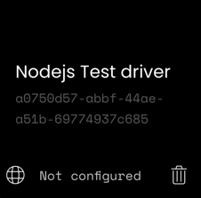

Driver Registration
An external integration driver can optionally register itself in a remote if the driver advertisement
for auto-discovery is not sufficient.
This is a convenience feature if a driver would like to provide its access token without the user requiring to manually
enter it, or if the driver cannot be automatically be discovered by the remote due to network setup (non-local servers,
firewalls, VLAN etc.).
sequenceDiagram
participant I as Integration
participant mDNS
participant R as Remote
participant U as UI / web-configurator
R-)mDNS: publish service
I-)mDNS: lookup remote
I->>+R: register integration driver
R-->>-I: result
rect rgb(118, 153, 144)
Note right of R: Integration setup
U->>R: get integration drivers
U->>R: create integration instance
U->>R: enable integration instance
end
rect rgb(51, 82, 102)
R-)I: start communication
Note right of I: See integration message flow
end
Registration REST API
Driver registration is only possible through the Remote core REST API.
See: https://github.com/unfoldedcircle/core-simulator/tree/main/core-api
Example
Register the simulated-light driver using the Core-Simulator Docker setup. This also works using the Simulator VM running with bridge networking:
- The integration driver is accessible at
192.168.1.115and listens on port9988. Adapt to your environment! - Register driver with
"driver_url:" "ws://192.168.1.115:9988" - Use the predefined Postman collection to interact with the Simulator from the host, or use a curl call:
curl --location 'http://localhost:8080/api/intg/drivers' \
--user "web-configurator:1234" \
--header 'Content-Type: application/json' \
--data '
{
"driver_id": "unique-driver-id or omit for auto generated uuid",
"name": {
"en": "Nodejs Test driver"
},
"driver_url": "ws://192.168.1.115:9988",
"version": "0.0.1",
"icon": "uc:test",
"enabled": true,
"description": {
"en": "This is the way"
},
"device_discovery": false,
"setup_data_schema": {},
"release_date": "2023-04-02"
}
'
- Note: using localhost:8080 when running from the host where the Simulator service is running in a container.
After a successful registration the driver will show up in the web-configurator:

Click on the driver and start the setup:

The above example has an empty setup_data_schema, so there won't be a user interaction and the setup only consists
of connecting to the driver and fetching the driver information.

The driver is now registered and the available entities will show up in the driver configuration: